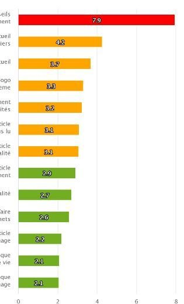

Les organisations publiques ont des enjeux particuliers en ce qui concerne l’éco-responsabilité numérique. Comme les organisations privées, elles répondent à un enjeu planétaire pour limiter les impacts environnementaux des services numériques qui croissent autant que les services publics se modernisent et s’informatisent à grand pas.
Ce sujet, comme l’accessibilité au plus grand nombre devient un sujet d’exemplarité des services publics qui on l’espère, auront une vocation à avoir une capacité d’entraînement des organisations privées et plus globalement de la société au sens large. L’éco-responsabilité s’est plusieurs fois invitée dans la sphère politique puisqu’on voit les élus qui se sont emparés de sujet en même temps que des mouvements dissidents politiques intégraient cette dimension de numérique éco-responsable. Signe de cette mise en valeur et des nouveaux discours/programmes politiques, nous avons désormais une élue au Numérique Responsable pour la ville de Nantes.
Au-delà de l’enjeu environnemental, la sobriété numérique permet également de réduire la fracture numérique, permettre l’égalité des chances devant les contenus et services en ligne puisque un service plus frugal sera aussi plus accessible à des citoyens ayant une connexion limitée ou un ordinateur/mobile old-tech, low tech ou bien encombré.
Une accélération est en train de s’opérer pour la prise en considération et va devenir encore plus visible puisque l’article 55 de la Loi n° 2020-105 du 10 février 2020 relative à la lutte contre le gaspillage et à l’économie circulaire » précise que les organisations doivent promouvoir dans les marchés les logiciels dont la consommation énergétique est limitée en phase d’usage.
Lire l’Article 55A compter du 1er janvier 2021, les services de l’Etat ainsi que les collectivités territoriales et leurs groupements, lors de leurs achats publics et dès que cela est possible, doivent réduire la consommation de plastiques à usage unique, la production de déchets et privilégient les biens issus du réemploi ou qui intègrent des matières recyclées en prévoyant des clauses et des critères utiles dans les cahiers des charges.
Lorsque le bien acquis est un logiciel, les administrations mentionnées au premier alinéa de l’article L. 300-2 du code des relations entre le public et l’administration promeuvent le recours à des logiciels dont la conception permet de limiter la consommation énergétique associée à leur utilisation.
Une démarche d’éco-responsabilité numérique est une démarche de qualité qui a un coût
Cette contrainte au-delà du gain qu’elle apporte représente également un coût car cela nécessite d’intégrer cette démarche d’éco-conception dans le processus de fabrication et ainsi de former les équipes de la chaine de fabrication aux bonnes pratiques, aux bons réflexes mais aussi de mesurer, analyser, détecter des sur-consommations et donc de passer du temps à contrôler, mesurer, parfois corriger ; d’autant plus que cette démarche doit s’opérer au-delà de sa fabrication initiale mais aussi en phase de maintenance dans un contexte d’évolutions technique souvent subies et des ajustements fonctionnels.
Une Maîtrise d’ouvrage (MOA) doit-elle attendre de son partenaire Maître d’œuvre (MOE) d’intégrer cette démarche de manière spontanée ? Aujourd’hui non, comme cette démarche a un coût, il est souvent risqué d’intégrer cette dimension qualitative sans prendre le risque de dérive ou de perdre le marché pour un candidat MOE. La MOA doit dans ce cas intégrer des EXIGENCES depuis son cahier des charges qui doit permettre de qualifier la « qualité » attendue.
La maîtrise d’ouvrage du projet de développement – maintenance de son patrimoine applicatif doit se fixer – et fixer à ces partenaires (MOE, AMO, équipes COM, …) – des objectifs = EXIGENCES
Mais comment intégrer ces exigences dans les clauses des marchés, comment les piloter et comment les vérifier ?
On peut lire certaines exigences du type :
- Le candidat devra démontrer dans sa réponse, son niveau de maturité de sa démarche RSE dans ses activités
- Le candidat devra démontrer sa capacité à intégrer la dimension d’éco-conception numérique dans sa réponse
- Le candidat devra proposer / intégrer des bonnes pratiques d’éco-conception des sites web
Souvent maladroites ou superficielles, les exigences d’éco-responsabilité numérique doivent être plus précises et être orientées vers des objectifs de résultats plutôt que des exigences de moyen.
Quel type d’exigence ?
Des exigences de résultats ont plusieurs avantages par rapport aux bonnes pratiques (exigences de moyen) car elles valident de manière absolue que le résultat est bon ou n’est pas bon sans débat d’expert, sans débat d’applicabilité d’une règle, d’application partielle ou pas, de mise en œuvre correcte ou pas.
Elles sont surtout peu dépendantes des évolutions des technologies et on comme avantage de rester sur des indicateurs intermédiaires faciles à collecter et sont facilement vérifiables, mesurables.
Néanmoins, elles doivent être accompagnées d’un référentiel de bonnes pratiques, en annexe, pour éviter de mettre en place des actions correctives pour optimiser après-coup. C’est aussi une bonne manière d’embarquer les équipes de conception et de dévelopement dans la démarche. Ces documents en annexe ne doivent pas être trop lourds et se concentrer sur des référentiels générique, pas orientés techno ou langage.
Elles ont 2 complexités : elles doivent être étalonnées pour fixer des seuils et elles ne renvoient pas toute la responsabilité du résultat vers celui qui « fabrique » (MOE).
Quelles métriques mesurer pour couvrir les impacts majeurs d’un service numérique ?
Un indicateur haut niveau comparable à d’autres domaines est l’impact Carbone exprimé en g eqCO2. L’avantage de cet indicateur est qu’il est universel et partageable par tous dans l’entreprise, avec ses clients, comparables avec ses concurrents, dans son écosystème, avec tout service/produit.
L’impact Carbone n’étant pas un indicateur mesurable mais « projetable » sur la base d’indicateurs de flux ou intermédiaires. On peut citer la consommation d’énergie, la consommation de données sur le réseau, la performance d’affichage ou le nombre de requêtes vers les serveurs internes ou externes à l’organisation.
Quoi qu’il en soit, la projection Carbone sera d’autant plus fiable si on part de mesures réelles sur des appareils réels que d’estimation ou de mesure sur émulateur. Cette projection peut être améliorée par la connaissance des parcours ou du type de matériel sur lequel on utilise le service ou le contenu..

Comment fixer des seuils d’une exigence de résultat ?
Fixer des seuils nécessite tout d’abord de préciser dans quelles conditions on effectue les mesures telles que :
- Les conditions techniques de la mesure : sur un type device, sur un type de connectivité filaire/mobile/wifi, sur un navigateur donné, …
- Les paramètres de réglages : avec telle luminosité, avec un cache vidé/ou pas, ….
- Le cas d’utilisation qu’on peut rapprocher d’une unité fonctionnelle : une ou x pages sur jouées sur un temps donné, une ou x étapes, un parcours de A à Z.
Fixer des seuils demande aussi de benchmarker son domaine ou son existant pour appréhender les valeurs. En fixant telle valeur, on répond aux 2 questions, suis-je bien dans des valeurs de bonnes qualités et sont –elles atteignables ?
Des objectifs de moyens peuvent être ajoutés en annexes des exigences de résultats. Un référentiel de bonnes pratiques aura un impact positif et permet d’embarquer les équipes de MOE à faire bien du premier coup sans surcoût de correction mais attention ces référentiels de bonnes pratiques ou Green Patterns devront être instanciées par technologie ou par langages et donc évoluer au rythme des changements technologiques ou rester très génériques.
Exemple 1 d’exigence sur le résultat :
L’environnement de référence est une tablette de moyenne gamme, en connexion de type Wi-Fi, basée sur un environnement…, sur les 5 parcours clés de mon application web composés de X étapes, X écrans, nous fixons 4 exigences de ressources. Chaque étape ne doit pas consommer plus de X Ko ET chaque étape ne doit pas consommer plus de X fois la consommation énergétique d’une page blanche ET chaque étape doit s’afficher en moins de X secondes sur la base du dernier élément chargé ET chaque étape devra consommer moins de X Mo de mémoire.
Exemple 2 d’exigence sur les moyens :
Le candidat devra démontrer sa capacité à mesurer / piloter ses indicateurs durant le projet et alerter sur une déviation de cette consommation au plus vite durant le projet.
Exemple 3 d’exigence sur les moyens :
Le candidat devra intégrer à minima les bonnes pratiques de développement (en annexe dans le document technique)
Valider la conformité à une exigence dans un projet
Une fois les exigences posées, il faut alors les piloter durant le projet via des points intermédiaires qui permettent de sonder un résultat partiel at ainsi éviter l’effet tunnel. Toutes ces revues intermédiaires permettent de développer les scripts automatiques qui vont permettre la réalisation de mesure de manière fiable et comparable et de pouvoir consolider au fil de l’eau le patrimoine de test. Ces vues permettent aussi d’ajuster si besoin et discuter sur du sur-fonctionnel ou d’un sur-contenu ou de surcoût d’intelligence embarquée entre MOA et MOA.
C’est bien dans cette phase de validation que l’exigence de résultat trouve tout son sens puisque nous n’avons pas besoin d’audité tous les écrans/pages sur un référentiel de bonnes pratiques mais juste des scripts automatisés durant le projet qui sont rejoués sur le produit fini.